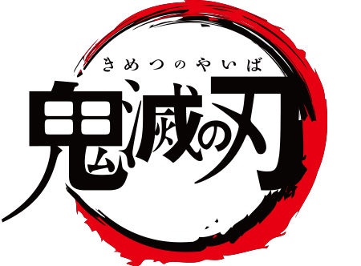

Kimetsu no Yaiba
Inosuke Hashibira
Inosuke Hashibira (Hashibira Inosuke?) é um Caçador de Demônios, sendo um dos amigos e companheiro de viagem de Tanjiro Kamado é um dos principais protagonistas de Kimetsu no Yaiba: Demon Slayer